Анастасия Путина
Проектирую сложные интерфейсы для веба и мобильных приложений: B2B-диспетчерская для управляющих компаний и собственный продукт — ежедневник с мобильным приложением. До дизайна — 10 лет аналитики, поэтому решения принимаю по данным.
DomoSense — диспетчерская для управляющих компаний
Лифты, вентиляция, вода и пожарная сигнализация в одном окне. В рабочем проекте я спроектировала веб-кабинет диспетчера с нуля, а в 2026 году развила его в единую систему: веб для пульта и мобильное приложение для 7 ролей — от администратора УК до подрядчика с доступом на 3 часа.
NDA: названия и данные вымышлены. Мобильная часть — концепт, тестов с пользователями не было.
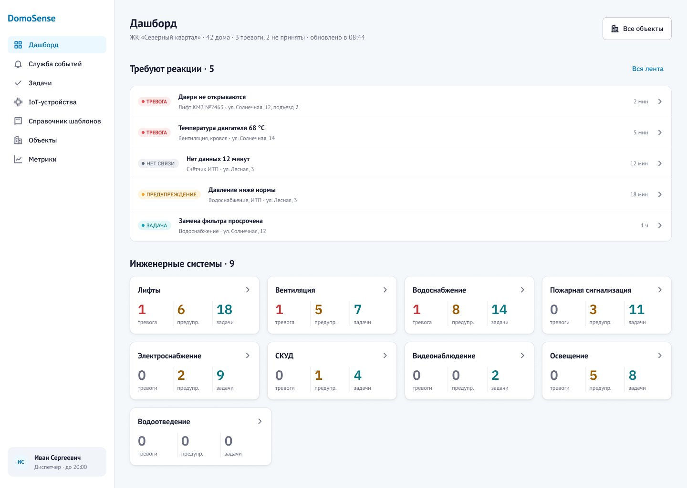
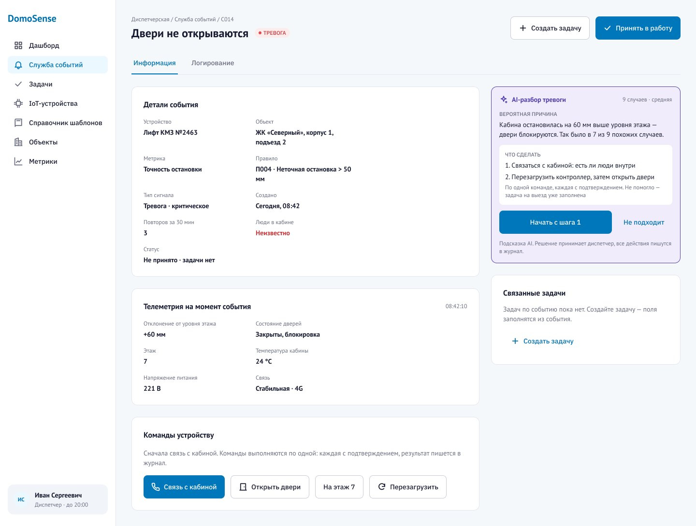
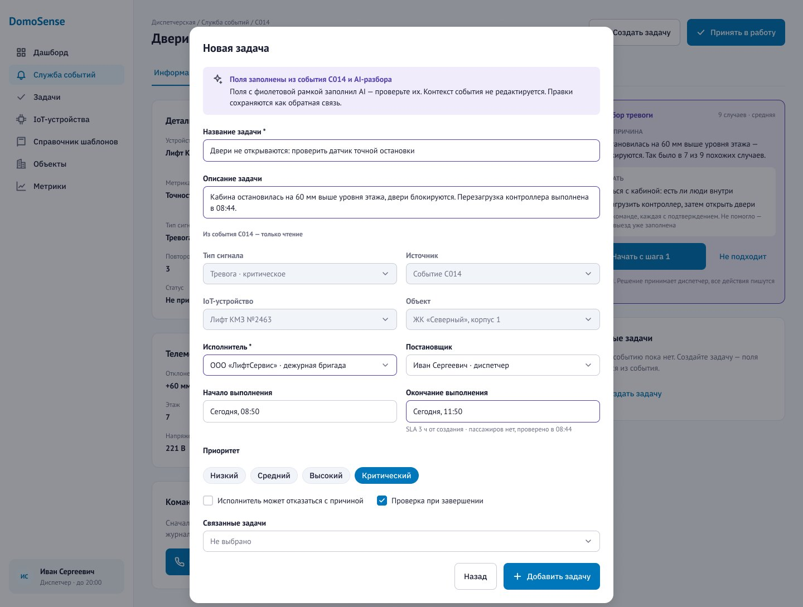
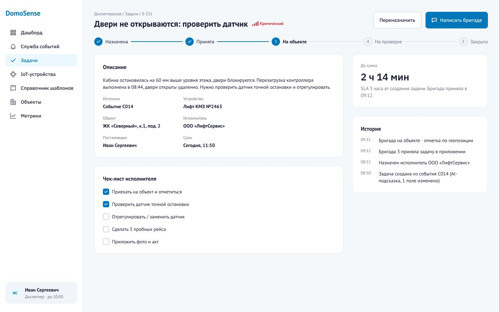
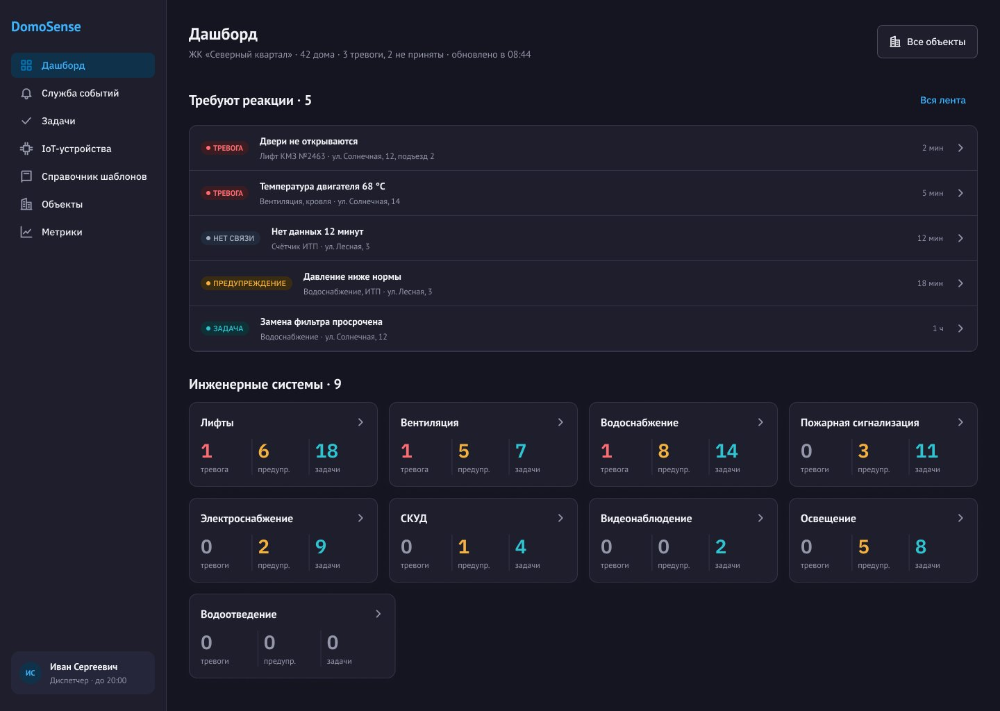
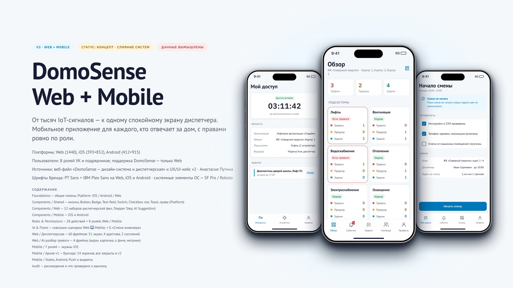
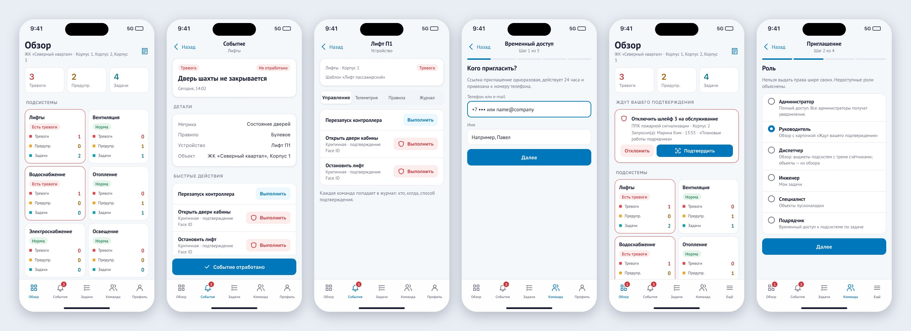
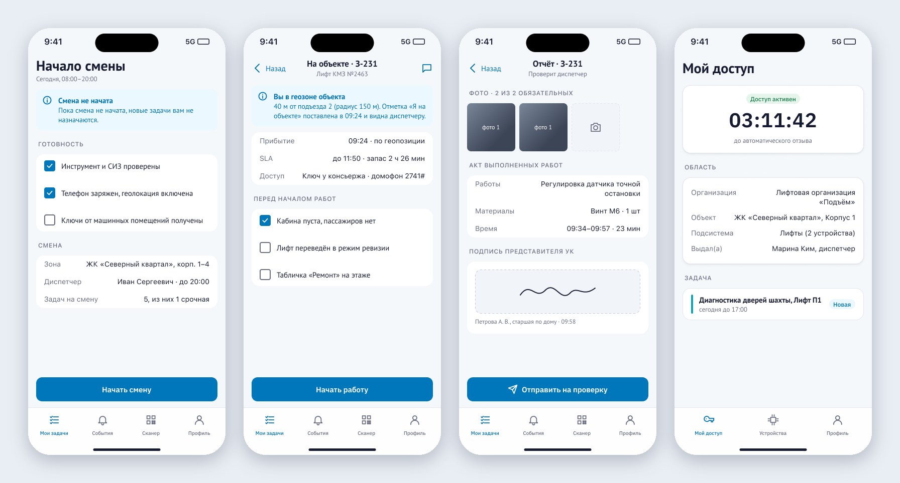
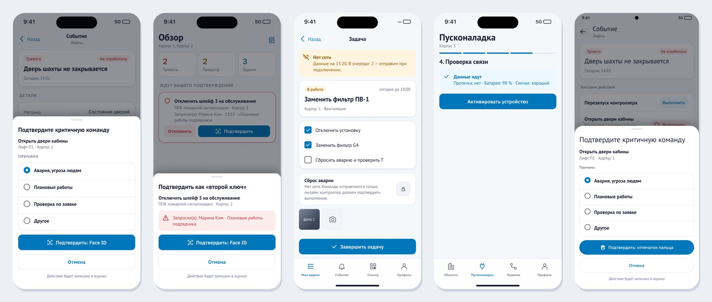
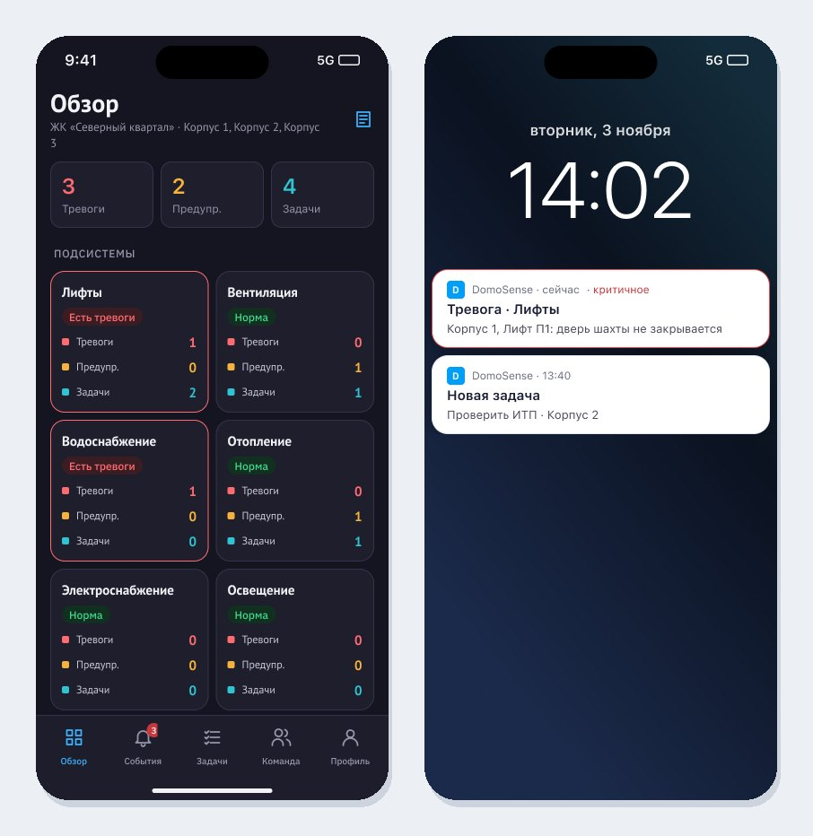
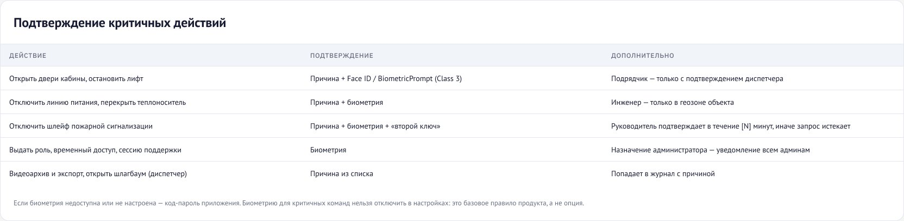
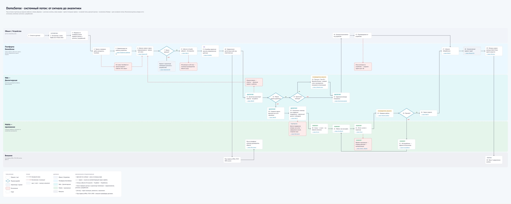
- Права по роли, а не по экрану. Матрица 8 × 28: недоступное не появляется в навигации, заблокированное объясняет почему.
- Сначала человек, потом техника. При застрявшем лифте первый шаг — связь с кабиной, команды по одной.
- Критичное — с причиной и биометрией. Пожарная сигнализация — только со «вторым ключом» руководителя; пуш не выполняет действие.
- Одна дизайн-система. Аудит расхождений веба и мобайла, контраст по WCAG ≥ 4,5:1, токены → CSS.
Микровзаимодействия: движение, которое объясняет, что произошло
Два ролика в разном характере — сдержанный рабочий интерфейс и смелый beauty e-com. Анимация показывает смену статуса, уверенность подбора и подтверждает действие. Собраны кодом (HTML, CSS, Canvas) с покадровым рендером в видео.


«Мой ход» — ежедневник на полгода и детская версия Junior
Люди бросают планеры: год — слишком далеко, «цели» и баллы давят, а пропущенный день ощущается как провал. «Мой ход» — ежедневник на 26 недель: задачи вместо громких целей, честное описание вместо оценок, минимум — две минуты в день. Метод внутри — путь из точки А в точку Б. Продаётся как заполняемый PDF через Telegram-бот.


Без страницы на каждый день: неделя — это план и дневник побед, шагов, проб и ошибок. Вместо оценок — личные рекорды и суперсилы, плюс свои деньги: три банки и копилка мечты.


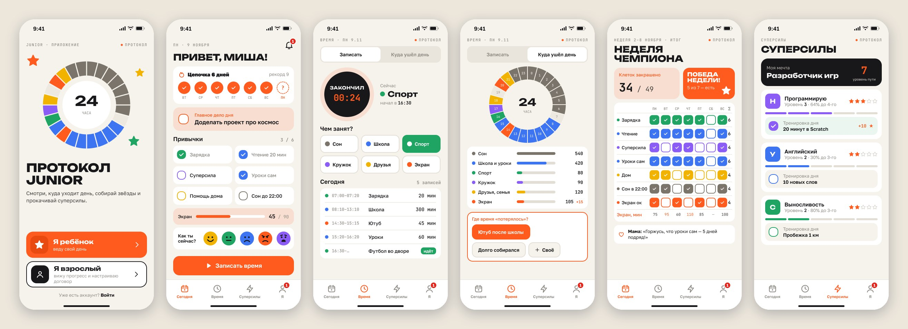
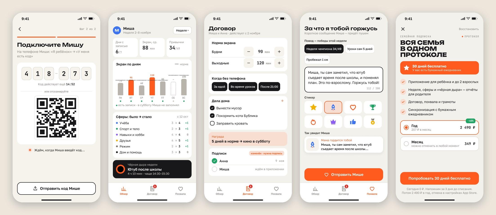
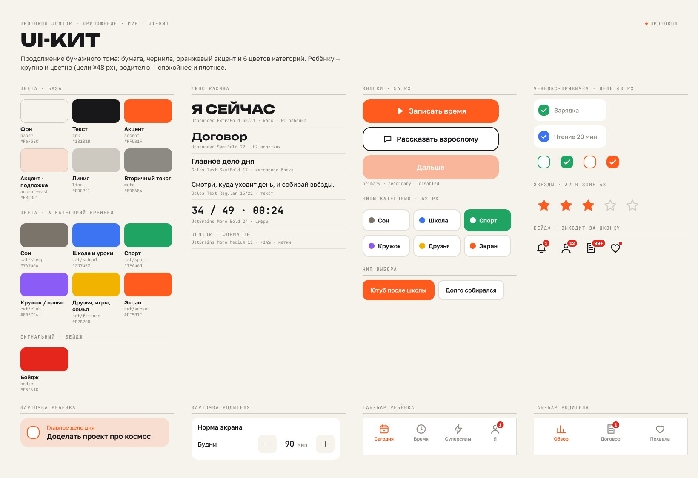
- Полгода вместо года. 26 недель видно целиком, начать можно в любой день.
- Задачи, а не цели; без баллов и критики. Точка А — описание словами, трудная неделя — подсказка, а не приговор.
- Минимум — две минуты. Одна строчка засчитывает день; пропустить день можно, два подряд — нет.
- Хвалят за записи, а не за оценки. В Junior родитель видит прогресс; чувства ребёнка видны только с его согласия.
Beauty e-com: от «не знаю, что мне подойдёт» до повторной покупки
Косметику нельзя вернуть, поэтому страх ошибиться — главный барьер. Сценарий, где уверенность «это подойдёт мне» появляется до кнопки «В корзину», а оформление занимает один экран. Бренд «Оттенок», товары и цены вымышлены; исследований не было — ниже гипотезы.


- Гипотеза: если показывать «Подходит вашей коже» и отзывы людей с тем же типом кожи, вырастет конверсия из карточки в корзину. Проверка — A/B для тех, кто прошёл подбор.
- Гипотеза: если вместо «до бесплатной доставки 210 ₽» предлагать конкретный товар, меньше корзин будет брошено. Guardrail — отмены заказов.
| 2024 — 2026 | Product Designer / Product Manager · IT-компания, B2B SaaS, удалённо. IoT-диспетчеризация и инспекции: web, PWA, мобильное приложение. Параллельно — ручное тестирование мобильного приложения компании. |
| 2026 — н. в. | Автор продукта · ежедневник «Мой ход» на полгода, детская версия Junior с приложением и Telegram-бот для продаж. |
| 2021 — 2024 | UI/UX-дизайнер · фриланс. |
| 2012 — 2023 | Начальник отдела мониторинга и тестирования · ПНИПУ. Система оценки знаний, аналитика, команда. |
| Навыки | IA, User Flow, JTBD, дашборды, сложные формы · дизайн-системы на Figma Variables, токены → CSS · iOS HIG, Material 3, WCAG · юзабилити-тесты, метрики · design QA и ручное тестирование мобильных приложений · анимация интерфейса · печать и заполняемые PDF · Figma, GitHub, HTML/CSS, AI-инструменты |
| Образование | ПНИПУ — высшее (2011) |
| Обучение | Uprock — UI/UX и нейросети (2026) · Яндекс Практикум — дизайнер интерфейсов (2024) |